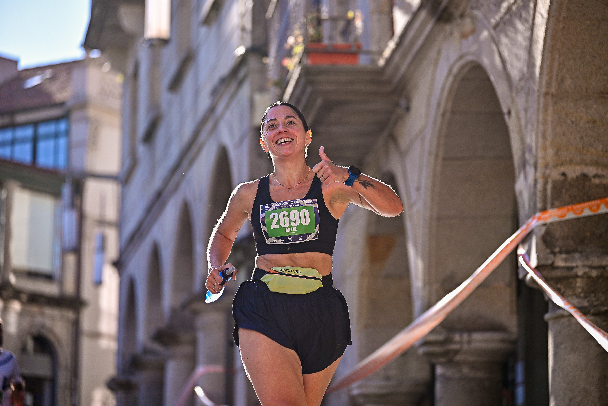
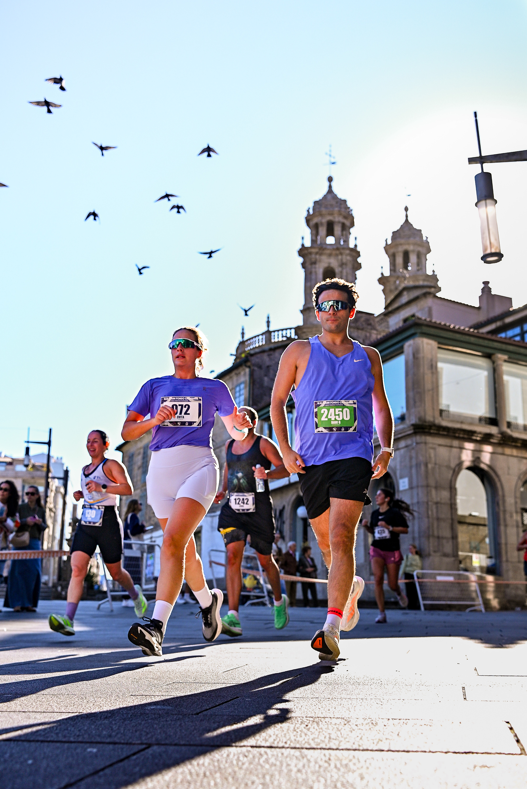

Pontevedra, in Galicia, Spain, hosted the XLIV Gran Fondo CaixaBank on 18 October 2026. The programme brought together half-marathon and 10K runners alongside younger participants, with the Ponte dos Tirantes providing the setting for the start.
The published schedule set the youth races for 10:15, the 10K for 10:30 and the half-marathon for 11:00. This was a road-running meeting: the Gran Fondo name here belongs to athletics, with the longer race covering the half-marathon distance.
A new approach to the finish
Ahead of the event, Sociedad Gimnástica de Pontevedra announced a revised final approach to the CGTD athletics track. From the Ponte dos Tirantes roundabout, the route was to use rúa José Malvar and enter near the track’s 200-metre point, giving half-marathon runners a more direct approach to the finish.

Image Media’s photographs move from the gathered runners beneath the start arch to individual moments on the streets. A smile and a thumbs-up in one frame, and runners passing stone buildings in another, show the event at a human scale alongside its race programme.

Image Media coverage
Nemi, Luciano Inocencio, Felipe dos Santos and Fran Paulino formed the Image Media coverage team. The three photographs selected for this report are credited individually to Luciano Inocencio and Nemi, following the authorship recorded in the supplied filenames.
Image Media coverage
Reporting: IM News Editorial Desk
Coverage photographers: Nemi, Luciano Inocencio, Felipe dos Santos, Fran Paulino / Image Media
Sources: official event listing and organiser’s course notice.